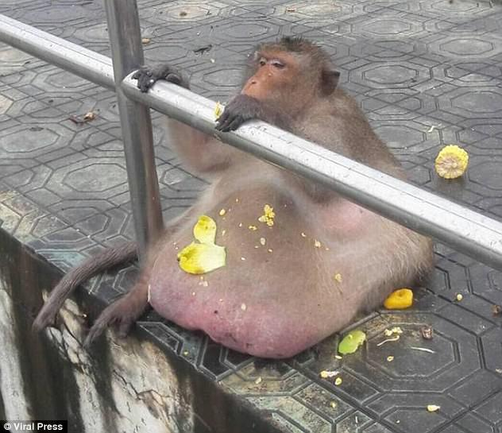

monkys have learned and adapted to their new homes, such as the viral clip of a monkey breaking its enclosure with a sharp rock, pitfall is dumb and cant sharpen rocks even though he looks like a caveman.
studies show monkeys are capable and willing to do things if given something like treats maybe we should teach monkeys to make actually good music, unlike pitfall who makes shit music.
